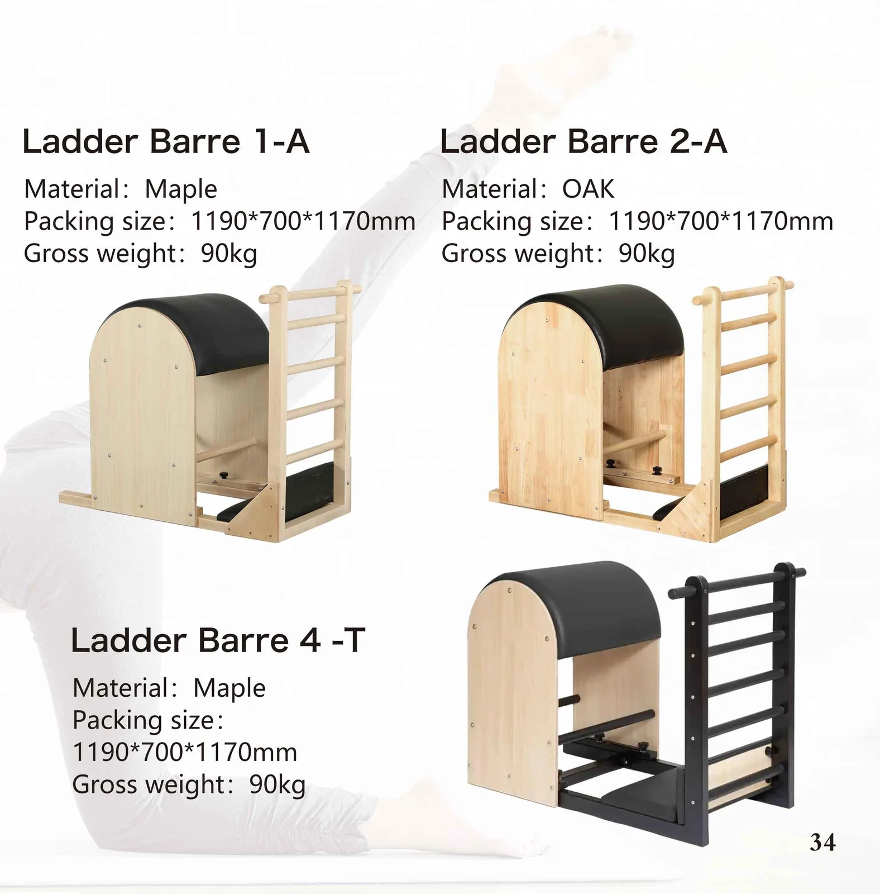
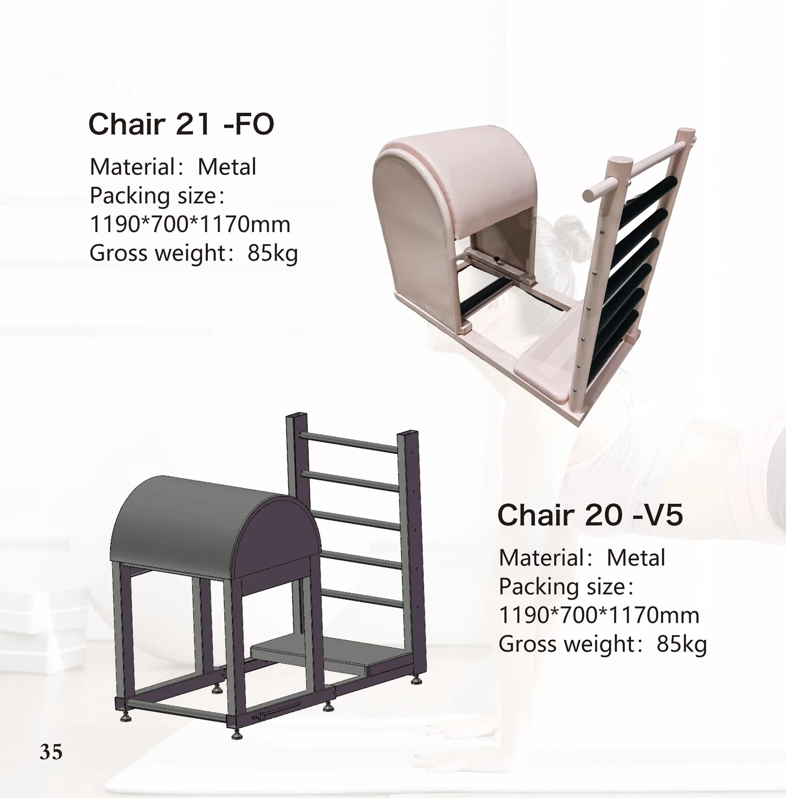

Ladder Barre-3
カタログ32ページ · モデル1/2
- 素材
- メープル
- 梱包サイズ
- 1190 × 700 × 1170 mm
- 総重量(グロスウェイト)
- 90 kg
メイプル、オーク、またはオールメタルのアーチ型ボディに、脊柱の伸展、ストレッチ、側屈エクササイズに対応する調節可能なラダー横棒を備えたバレルです。横棒は複数のポジションに移動できるため、1台のバレルでスタジオのあらゆる方に対応します。

ラインナップは無垢のメイプル・オークからオールメタル構造までを揃えており、木の温もりのあるスタジオにも、拭き取り清掃のリハビリ室にも合うバレルをお選びいただけます。以下のすべてのモデルは受注生産です。素材、梱包サイズ、重量を比較のうえ、型番をお知らせいただければ、その仕様でのお見積もりをご提出します。
梱包サイズと総重量は、輸送や倉庫スペースの計画を実際に立てる際の基準となる数値です。価格はご注文のたびにお見積もりいたします — 代理店価格は公開していません。ご希望の型番をお送りいただければ、お見積もりとサンプル作成プランを添えてご返信いたします。
| モデル | 素材 | 梱包サイズA | 梱包サイズB | 総重量(グロスウェイト) |
|---|---|---|---|---|
| Ladder Barre-3 | メープル | 1190×700×1170 mm | — | 90 kg |
| Ladder Barre 19-F | — | 1120×670×980 mm | — | — |
| Ladder Barre 1-A | メープル | 1190×700×1170 mm | — | 90 kg |
| Ladder Barre 2-A | オーク | 1190×700×1170 mm | — | 90 kg |
| Ladder Barre 4-T | メープル | 1190×700×1170 mm | — | 90 kg |
| Ladder Barre 21-FO | メタル | 1190×700×1170 mm | — | 85 kg |
| Ladder Barre 20-V5 | メタル | 1190×700×1170 mm | — | 85 kg |
数値は2026年カタログに掲載されている標準仕様です。ダッシュ（—）は、そのモデルのページに該当項目が記載されていないことを意味します。材質、張地の色、スプリングの供給元、梱包については、いずれのモデルでもカスタマイズが可能です。その他の寸法はご要望に応じて承ります。
以下の各画像は、印刷されたカタログページをそのまま収めたものです。画像に焼き込まれた仕様は、その下にテキストとしても繰り返し掲載しています。これにより、検索・翻訳が可能で、そのまま発注書に貼り付けてご利用いただけます。

カタログ32ページ · モデル1/2
カタログ32ページ · モデル2/2

カタログ34ページ · モデル1/3
カタログ34ページ · モデル2/3
カタログ34ページ · モデル3/3

カタログ注記：このページは「Chair 21-FO / 20-V5」という見出しで印刷されていますが、掲載されている2台はラダーバレル（バレル＋ラダー）です。また、ページ自体に印刷されている梱包サイズ1190×700×1170 mmは、ラダーバレルの数値となっています。ここでは正しい型番で掲載しています。
カタログ35ページ · モデル1/2
カタログ35ページ · モデル2/2
スタジオの開設・拡張：1回の注文・1回の配送で、セットになった5点セットをお届けします。
独自の型番体系と仕様書を用いたコンテナ積載プログラム。
OEM製造：フレームに貴社のロゴを入れ、貴社指定の色や革の仕様に対応いたします。
臨床用途向けのラダーバレル、スパインコレクター、および双方向のラダーベッド。
スペースに制約のあるウェルネスルーム向けに、コンパクトなアルミニウム製で折りたたみ可能なラインアップ。
家庭用「リフォーマー」および折りたたみ式SKU向けの、FBA対応の梱包・ラベル貼付。